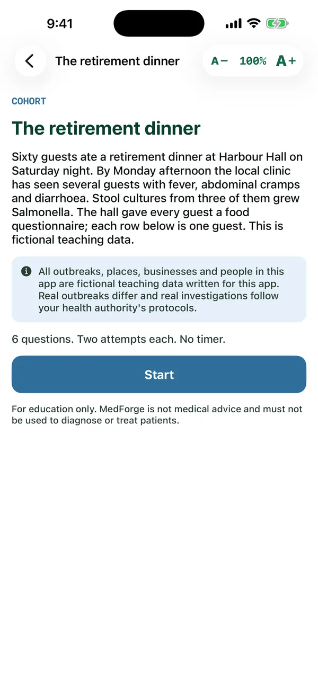

MedForge / Apps / Outbreak Desk
Outbreak Desk
Investigate the cluster.
Ten fictional outbreaks worked like a real investigation. Read the line list and the epidemic curve, build the 2 by 2 table, calculate attack rates, relative risk and odds ratios, and choose control measures. Plus twelve concept checks.
Free preview: the first case file and four concept checks. Unlock for all ten case files and twelve concept checks. $2.99/month or $19.99/year
Live demo of Outbreak Desk
Try it: the retirement dinner
Sample from the first case file: read the epidemic curve, fill in the 2 by 2 table from the line list, then calculate the relative risk.
A real screen from Outbreak Desk
From the iPhone app, in a pre-release build. The Android app follows the same design, and the text size can be changed from 40% to 300% on every screen.

Every fact in this app is cited
These are the references this app draws on. Inside the app, each answer links to its source in a reading window that keeps your place.
- Chapter 6: Choosing effect measures and computing estimates of effectCochrane (Cochrane Handbook for Systematic Reviews of Interventions) · Cochrane Handbook
- CholeraEuropean Centre for Disease Prevention and Control · ECDC
- Disease information about hepatitis AEuropean Centre for Disease Prevention and Control · ECDC (EU)
- Legionnaires' diseaseEuropean Centre for Disease Prevention and Control · ECDC (EU)
- Disease information on measlesEuropean Centre for Disease Prevention and Control · ECDC (EU)
- Norovirus infectionEuropean Centre for Disease Prevention and Control · ECDC
- SalmonellosisEuropean Centre for Disease Prevention and Control · ECDC (EU)
- Salmonellosis, Annual Epidemiological Report for 2022European Centre for Disease Prevention and Control · ECDC (EU)
- Facts about tuberculosisEuropean Centre for Disease Prevention and Control · ECDC
- Complexity of the Basic Reproduction Number (R0)CDC, Emerging Infectious Diseases journal · CDC EID journal
- Outbreak Investigations - A PerspectiveCDC, Emerging Infectious Diseases journal · CDC EID journal
- Statistical Guidance on Reporting Results from Studies Evaluating Diagnostic TestsU.S. Food and Drug Administration · FDA
- BotulismNational Library of Medicine, MedlinePlus · NIH / NLM MedlinePlus
- CholeraNational Library of Medicine, MedlinePlus · NIH / NLM MedlinePlus
- Legionella TestsNational Library of Medicine, MedlinePlus · NIH / NLM MedlinePlus
- Legionnaires' DiseaseNational Library of Medicine, MedlinePlus · NIH / NLM MedlinePlus
- MeningitisNational Library of Medicine, MedlinePlus · NIH / NLM MedlinePlus
- Norovirus InfectionsNational Library of Medicine, MedlinePlus · NIH / NLM MedlinePlus
- Salmonella InfectionsNational Library of Medicine, MedlinePlus · NIH / NLM MedlinePlus
- TuberculosisNational Library of Medicine, MedlinePlus · NIH / NLM MedlinePlus
- BotulismNational Health Service (England) · NHS
- Food poisoningNational Health Service (England) · NHS (UK)
- MeningitisNational Health Service (England) · NHS
- Norovirus (vomiting bug)National Health Service (England) · NHS
- Population screening explainedUK Health Security / NHS population screening, GOV.UK · UKHSA / UK NSC (GOV.UK)
- Legionnaires' disease: guidance, data and analysisUK Health Security Agency, GOV.UK · UKHSA (GOV.UK)
- Criteria for a population screening programmeUK National Screening Committee, GOV.UK · UKHSA / UK NSC (GOV.UK)
- BotulismWorld Health Organization · WHO
- Estimating mortality from COVID-19World Health Organization · WHO
- CholeraWorld Health Organization · WHO
- Food safetyWorld Health Organization · WHO
- Foodborne disease outbreaks: guidelines for investigation and controlWorld Health Organization · WHO
- Hepatitis AWorld Health Organization · WHO
- Coronavirus disease (COVID-19): Herd immunity, lockdowns and COVID-19World Health Organization · WHO
- LegionellosisWorld Health Organization · WHO
- MeaslesWorld Health Organization · WHO
- Measles vaccines: WHO position paper, April 2017World Health Organization, Weekly Epidemiological Record · WHO
- MeningitisWorld Health Organization · WHO
- Salmonella (non-typhoidal)World Health Organization · WHO
- TuberculosisWorld Health Organization · WHO
- WHO consolidated guidelines on tuberculosis: module 1: prevention: tuberculosis preventive treatmentWorld Health Organization · WHO